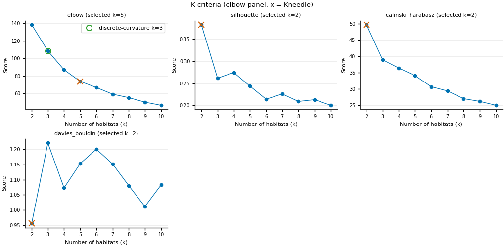
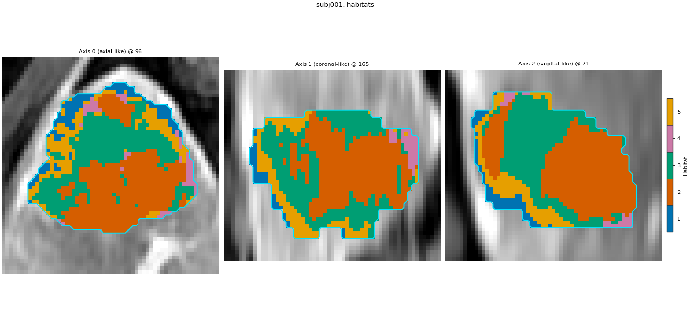
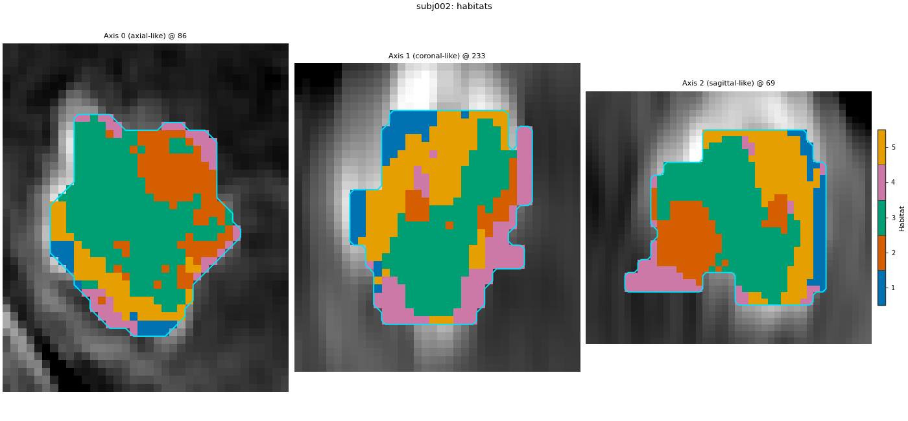
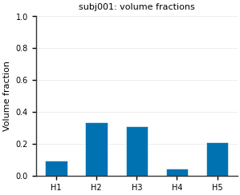
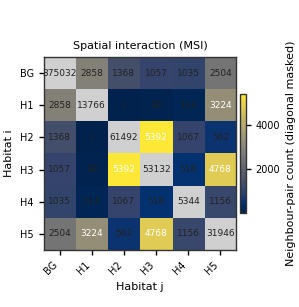
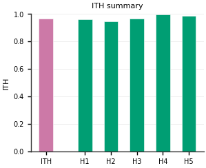
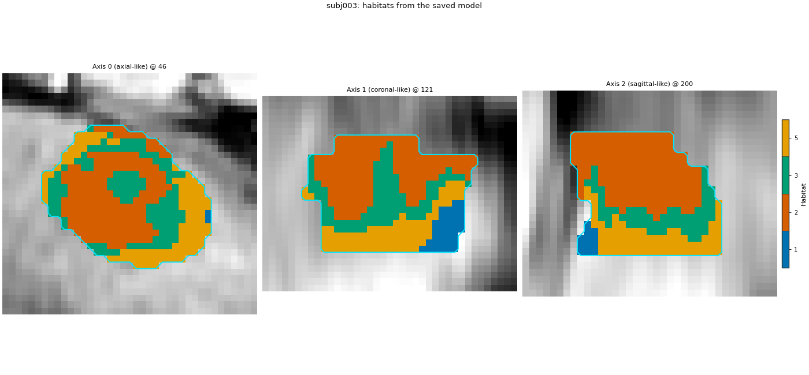

Note
Go to the end to download the full example code.
Two-step habitats with a Spec#
Including new-patient prediction.
Background. A tumour is not uniform: some parts enhance strongly, some wash out, some are necrotic. Habitat analysis splits the ROI into a few sub-regions (habitats) whose voxels behave alike across the DCE phases, using one definition shared by every patient, and then describes each patient by how much of each habitat they have and how the habitats are arranged.
Purpose. You will fit habitats on two demo patients with the
two-step design, pick the number of habitats with HABIT elbow
(Kneedle on inertia; see the caveat in the “How many habitats” cell),
view the habitat maps, get a one-row-per-patient feature table (volume
fractions, MSI, ITH, graph), save the model as a .habitatmodel
file, and label a third patient with it.
When to use. This is the default study design: you want habitat ids that mean the same thing in every patient, so volume fractions and other habitat features can be compared across a cohort.
Analysis definition. This page defines the reference analysis that
the other pages of this section reuse: four DCE phases, ROI LAP;
subject-level winsorize (1 % / 1 %) then z-score; 30 k-means
supervoxels per tumour; pool; no cohort-level preprocessing;
k-means habitats with 2..10 candidates and the elbow rule; nearest
centroid assignment; seed 0.
Key terms. Full definitions are on Concepts.
subject-level normalization – each patient’s voxel features are rescaled with that patient’s own statistics (here: clip the extreme 1 % at each end, then min-max to 0..1). MR intensities are arbitrary units, so without this step a darker scan lands in one habitat.
supervoxel – a small patch of similar neighbouring voxels, clustered inside each patient first so the cohort model has fewer, less noisy rows.
cohort-level preprocessing – a transform learned once on the pooled training rows (here: 10 equal-width bins per feature), saved inside the model, and reused unchanged on new patients.
pool / fit / assign – stack all patients’ supervoxels, learn the habitat centroids once, then give every voxel the id of its nearest centroid.
MSI – how often each pair of habitats touch; ITH score – how fragmented the habitats are (0 = one blob each).
.habitatmodel – the saved habitat definition; loading it labels new patients without refitting.
One HabitatSpec declares the whole study. One
fit_predict runs it. The same stage list is used by
Quickstart: Python API (fitted there on four
patients instead of two).
Note
Two training patients are enough to show every step, but they are a demo, not a cohort. A real study fits the habitat model on tens of patients so that the centroids describe the population.
Load the cohort#
The demo pack has five liver lesions with four DCE phases each. The first two patients define the habitats; the third plays a new patient at the end of the page. The pack is downloaded once and then cached. sphinx_gallery_thumbnail_number = 3
from pathlib import Path
import matplotlib.pyplot as plt
import numpy as np
from habit.contracts import HabitatModel, cohort_from_directory
from habit.datasets import fetch_demo
from habit.kernels import habitat_ith_dispersion, ith_score, spatial_interaction_matrix
from habit.execution import backend_from_policy
from habit.recipes import Study
from habit.spec import HabitatSpec, Spec, Stage
from habit.spec.policy import RunPolicy
from habit.viz import (
plot_cluster_validation_from_report,
plot_habitat_graph_slice,
plot_habitat_overlay,
plot_habitat_volume_fractions,
plot_intensity_slice,
plot_ith_summary,
plot_msi_matrix,
plot_partition_triptych,
)
# Change DATA / MODALITIES / ROI to your preprocessed layout.
DATA = fetch_demo()
MODALITIES = ("pre_contrast", "LAP", "PVP", "delay_3min")
ROI = "LAP"
cohort = cohort_from_directory(DATA, modalities=MODALITIES, roi=ROI)
# Training patients and one held-out "new" patient. Nothing about the
# new patient is used until the model is saved and reloaded.
train, new_patient = cohort[:2], cohort[2:3]
print(cohort)
subject = train[0]
Path("out").mkdir(exist_ok=True)
# Look at the input first: one arterial-phase slice with the ROI contour.
fig = plot_intensity_slice(
subject.image("LAP"),
roi_mask=subject.mask(ROI),
roi_contour=True,
image_label="LAP",
title=f"{subject.subject_id}: arterial phase and ROI",
)
fig.savefig("out/two_step_spec_input.png", dpi=150, bbox_inches="tight")
plt.show()

HABIT demo data (cached)
DATA (preprocessed root): C:\Users\dongm\.habit_data\demo-data-v1\preprocessed
On-disk inventory of this folder:
subjects (5): subj001, subj002, subj003, subj004, subj005
image series: LAP, PVP, delay_3min, pre_contrast
mask keys: LAP, PVP, delay_3min, pre_contrast
example image: images/subj001/delay_3min/WATER__BH_Ax_LAVA_Flex_3min_Series0012.nrrd
example mask: masks/subj001/delay_3min/WATER__BH_Ax_LAVA_Flex_10min_Series0017_mask.nrrd
Your own data must use the same folder tree (change IDs / series names):
DATA/
images/<subject_id>/<modality>/<one image file>
masks/<subject_id>/<roi>/<one mask file>
Then load it with the same call the demos use:
cohort = cohort_from_directory(DATA, modalities=("LAP",), roi="LAP")
Swap DATA / modalities / roi to match your tree. Mask key is often the
same as one image series (here LAP).
Cohort(5 subjects [subj001, subj002, subj003, subj004, subj005])
F:\work\habit_project\habit\viz\intensity.py:616: UserWarning: Display geometry conflict: image/anatomy direction does not match mask/label direction. Using the mask/label direction so coronal/sagittal superior-up follows the labelled anatomy. Pass direction= to override.
resolved_direction, resolved_spacing = resolve_display_geometry(
Declare every stage#
Stage’s first argument is a label you choose. Spec names a
registered component and its parameters. random_seed seeds every
stochastic stage (partition and fit), so a rerun paints the same map.
Where a preprocessing stage sits decides what it does. Before
pool it is subject-level: it runs on one patient at a time
with that patient’s own statistics, stores no state, and cannot leak
information between patients. After pool it is cohort-level:
it is learned once on the pooled training supervoxels, saved inside
the .habitatmodel, and applied unchanged to every new patient (it
is never refitted on the new patient).
Drop partition and pool and each subject is clustered alone
(Habitats inside each subject). Drop
only partition and voxels of all patients are clustered together
(Habitats from pooled voxels).
spec = HabitatSpec(
name="two_step_spec",
stages=(
# extract: one intensity column per DCE phase, voxels inside the ROI.
Stage("extract", Spec("raw", {"modalities": list(MODALITIES), "roi": ROI})),
# preprocess (subject-level): clip each column to that patient's
# own 1st..99th percentile, so a few very bright or very dark
# voxels do not stretch the scale.
Stage("preprocess", Spec("winsorize", {"winsor_limits": [0.01, 0.01]})),
# preprocess2 (subject-level): z-score each column with that
# patient's own mean and std. A globally darker scan no longer
# collapses into one habitat. New patients recompute THEIR OWN
# mean/std; training statistics are never applied to them.
Stage("preprocess2", Spec("zscore")),
# partition: 30 supervoxels per tumour. These rows, not voxels,
# are what the shared model clusters.
Stage("partition", Spec("kmeans", {"n_supervoxels": 30})),
# pool: stack every training subject's supervoxels into one matrix.
Stage("pool", Spec("pool")),
# No cohort-level preprocessing: after per-feature per-subject
# z-score, pooled rows already share a common scale, so cohort
# binning / cohort z-score would reintroduce a second transform
# that new patients must not refit.
# fit: one k-means for the cohort. Try 2..10 habitats, keep the elbow.
# n_init=10 restarts each candidate count.
Stage(
"fit",
Spec(
"kmeans",
{
"min_habitats": 2,
"max_habitats": 10,
"validation": "elbow",
"n_init": 10,
},
),
),
# assign: nearest centroid paints a habitat id onto every supervoxel,
# then onto the voxels that belong to it.
Stage("assign", Spec("nearest_centroid")),
# quantify: one row per subject. The Spec name is the feature family.
Stage("volume", Spec("volume")),
Stage("msi", Spec("msi")),
Stage("ith", Spec("ith_score")),
# graph: 8-voxel cubes, habitat-labelled nodes. Extended metrics off
# so the table stays the short default set.
Stage("graph", Spec("graph", {"include_extended_metrics": False})),
),
random_seed=0,
)
# One call runs every stage for both training patients.
result = Study(spec).fit_predict(
train,
backend=backend_from_policy(
RunPolicy(backend="serial", on_subject_failure="continue")
),
)
print(result.habitat_model.summary())
Cohort.map[_ComputeUnits]: 0%| | 0/2 [00:00<?, ?it/s]
Cohort.map[_ComputeUnits]: 50%|█████ | 1/2 [00:02<00:02, 2.28s/it]
Cohort.map[_ComputeUnits]: 100%|██████████| 2/2 [00:03<00:00, 1.84s/it]
Cohort.map[_ComputeUnits]: 100%|██████████| 2/2 [00:03<00:00, 1.84s/it]
Cohort.map[_AssignPrecomputedUnits]: 0%| | 0/2 [00:00<?, ?it/s]
Cohort.map[_AssignPrecomputedUnits]: 50%|█████ | 1/2 [00:01<00:01, 1.02s/it]
Cohort.map[_AssignPrecomputedUnits]: 100%|██████████| 2/2 [00:01<00:00, 1.07it/s]
Cohort.map[_AssignPrecomputedUnits]: 100%|██████████| 2/2 [00:01<00:00, 1.07it/s]
HabitatModel kmeans-3432f3b65bfec11a
habitats : 5
features (4) : pre_contrast, LAP, PVP, delay_3min
defining cohort : n=2
modalities : pre_contrast, LAP, PVP, delay_3min
cohort digest : cc1b16a34cc7478d...
produced by : habitat_model_fitter.kmeans
habit version : 3.0.0
random seed : 0
preprocessing state: inertia, selection_report, validation
How many habitats#
HABIT validation elbow is the same rule as kneedle. It runs
KneeLocator on k-means inertia (within-cluster sum of squares),
curve convex, direction decreasing (Satopaa, Albrecht, Irwin, and
Raghavan, 2011, Finding a “Kneedle” in a Haystack, IEEE ICDCS).
Normalize k and inertia to the unit square, draw the chord from the
first point to the last, and take the k farthest from that chord; a
smooth curve often places this knee to the right of the bend a person
sees. Literature “elbow” means inspecting within-cluster dispersion
versus k (Thorndike RL, 1953, Who belongs in the family?, Psychometrika
18(4):267-276) — not a second-difference formula. The discrete-curvature
elbow (visual elbow, computed) maximizes the second difference of
inertia (HABIT pre-v1.0 elbow); it is not a Thorndike formula. The
habitat map keeps the Kneedle K; other Ks are only in the table below.
Full comparison: Clustering algorithm and number of habitats.
report = result.habitat_model.preprocessing_state["selection_report"]
candidates = [int(k) for k in report["candidates"]]
inertia = np.asarray(report["scores"][report["methods"][0]], dtype=float)
def discrete_curvature_elbow_k(cluster_range, inertia_scores):
"""Return k maximizing the second difference of inertia (pre-v1.0 elbow)."""
values = np.asarray(inertia_scores, dtype=float)
cluster_range = [int(k) for k in cluster_range]
if values.size < 3:
return int(cluster_range[int(np.argmin(values))])
return int(cluster_range[int(np.argmax(np.diff(values, n=2))) + 1])
k_kneedle = int(result.habitat_model.n_habitats)
k_discrete = discrete_curvature_elbow_k(candidates, inertia)
# Other supported k-means criteria (skip gap: expensive; not run on this page).
from habit.habitat_model import KMeansHabitatModelFitter
_k_table = {"elbow_kneedle": k_kneedle, "discrete_curvature_elbow": k_discrete}
for _name in ("silhouette", "calinski_harabasz", "davies_bouldin"):
_fitter = KMeansHabitatModelFitter(
min_habitats=2, max_habitats=10, validation=_name, n_init=10
)
_fitter.set_random_state(0)
_k_table[_name] = _fitter.fit(result.units, cohort=train).n_habitats
print(
"K by criterion (elbow/kneedle=Kneedle; sil/CH maximize; DB minimize; "
"discrete-curvature=max second diff of inertia):"
)
for _name, _k in _k_table.items():
print(f" {_name}: {_k}")
print(f"habitat map uses Kneedle K = {k_kneedle}")
# Plot every supported k-means criterion (skip gap: expensive on this page).
_criteria = ("elbow", "silhouette", "calinski_harabasz", "davies_bouldin")
_vote = KMeansHabitatModelFitter(
min_habitats=2, max_habitats=10, validation=list(_criteria), n_init=10
)
_vote.set_random_state(0)
_vote_report = dict(
_vote.fit(result.units, cohort=train).preprocessing_state["selection_report"]
)
_vote_report["selected"] = {
"elbow": k_kneedle,
"silhouette": _k_table["silhouette"],
"calinski_harabasz": _k_table["calinski_harabasz"],
"davies_bouldin": _k_table["davies_bouldin"],
}
fig = plot_cluster_validation_from_report(
_vote_report,
title="K criteria (elbow panel: x = Kneedle)",
)
fig.axes[0].plot(
k_discrete,
float(inertia[candidates.index(k_discrete)]),
marker="o",
markersize=8,
markerfacecolor="none",
markeredgecolor="C2",
markeredgewidth=1.4,
linestyle="none",
label=f"discrete-curvature k={k_discrete}",
)
fig.axes[0].legend(loc="best", fontsize=8)
fig.savefig("out/two_step_spec_elbow.png", dpi=150, bbox_inches="tight")
plt.show()

K by criterion (elbow/kneedle=Kneedle; sil/CH maximize; DB minimize; discrete-curvature=max second diff of inertia):
elbow_kneedle: 5
discrete_curvature_elbow: 3
silhouette: 2
calinski_harabasz: 2
davies_bouldin: 2
habitat map uses Kneedle K = 5
Habitat maps#
Supervoxels, then habitats, on one slice. Two-step assigns labels from one shared model, so habitat ids are already comparable across subjects and do not need matching (matching is for separate fits / one-step).
habitat_map = result.habitat_maps[0]
fig = plot_partition_triptych(subject.image("LAP"), result.units[0], habitat_map, axis=0)
fig.savefig("out/two_step_spec_triptych.png", dpi=150, bbox_inches="tight")
plt.show()
for one, one_map in zip(train, result.habitat_maps):
fig = plot_habitat_overlay(
one.image("LAP"),
one_map,
title=f"{one.subject_id}: habitats",
crop_to="labels",
)
fig.savefig(f"out/two_step_spec_habitats_{one.subject_id}.png", dpi=150, bbox_inches="tight")
plt.show()



F:\work\habit_project\habit\viz\habitat_core.py:1110: UserWarning: Display geometry conflict: image/anatomy direction does not match mask/label direction. Using the mask/label direction so coronal/sagittal superior-up follows the labelled anatomy. Pass direction= to override.
resolved_direction, resolved_spacing = resolve_display_geometry(
F:\work\habit_project\habit\viz\habitat_overlay.py:806: UserWarning: Display geometry conflict: image/anatomy direction does not match mask/label direction. Using the mask/label direction so coronal/sagittal superior-up follows the labelled anatomy. Pass direction= to override.
resolved_direction, resolved_spacing = resolve_display_geometry(
F:\work\habit_project\habit\viz\habitat_overlay.py:806: UserWarning: Display geometry conflict: image/anatomy direction does not match mask/label direction. Using the mask/label direction so coronal/sagittal superior-up follows the labelled anatomy. Pass direction= to override.
resolved_direction, resolved_spacing = resolve_display_geometry(
Feature table#
One row per subject, produced by the four quantify stages above: volume fractions, MSI, ITH and graph columns. Only a few columns are printed; the full table has several hundred.
table = result.features.frame.set_index("subject")
print(table.shape[1], "columns")
columns = [c for c in table.columns if c.endswith("_volume_fraction")] + [
"ith_score",
"graph_num_nodes_total",
]
print(table[columns].round(3).to_string())
663 columns
habitat_1_volume_fraction habitat_2_volume_fraction habitat_3_volume_fraction habitat_4_volume_fraction habitat_5_volume_fraction ith_score graph_num_nodes_total
subject
subj001 0.096 0.336 0.312 0.044 0.212 0.965 487.0
subj002 0.081 0.107 0.440 0.213 0.159 0.907 161.0
How to read the result#
HABIT elbow/Kneedle kept K = 5 habitats on subj001 + subj002 (discrete-curvature elbow K = 3; silhouette / Calinski-Harabasz / Davies-Bouldin all K = 2 on this demo — map uses Kneedle only).
Volume fractions (columns
habitat_<i>_volume_fraction) sum to 1 per patient. Because the ids are shared, a column can be compared across rows: in this run habitat 1 covers 0.225 of subj001 and 0.439 of subj002.The ITH score is high for both (0.952 and 0.897): at the voxel scale each habitat is split into many pieces.
graph_num_nodes_total(481 vs 135) grows with tumour size as well as with fragmentation: subj001 has 34 694 ROI voxels, subj002 9 858. Compare it between patients only with that in mind.With two training patients these numbers illustrate the workflow; they are not estimates for any population.
One subject, four views of that table#
Volume fractions are columns of the table. MSI, ITH and the graph slice are drawn from the same label map the table used, so each figure explains one family of columns.
labels = habitat_map.label_array
fractions = {
hid: float(table.loc[subject.subject_id, f"habitat_{hid}_volume_fraction"])
for hid in habitat_map.habitat_ids
}
fig = plot_habitat_volume_fractions(fractions, title=f"{subject.subject_id}: volume fractions")
fig.savefig("out/two_step_spec_volume_fractions.png", dpi=150, bbox_inches="tight")
plt.show()
# The MSI matrix counts, for every pair of habitats, how often their
# voxels are neighbours; n_classes includes the background id 0.
n_classes = max(habitat_map.habitat_ids) + 1
fig = plot_msi_matrix(
spatial_interaction_matrix(labels, n_classes=n_classes),
habitat_ids=habitat_map.habitat_ids,
)
fig.savefig("out/two_step_spec_msi.png", dpi=150, bbox_inches="tight")
plt.show()
fig = plot_ith_summary(float(ith_score(labels)), dispersion=habitat_ith_dispersion(labels))
fig.savefig("out/two_step_spec_ith.png", dpi=150, bbox_inches="tight")
plt.show()
# Graph nodes: one node per connected piece of a habitat inside each
# 8x8x8-voxel cube.
fig = plot_habitat_graph_slice(labels, block_size=8)
fig.savefig("out/two_step_spec_graph.png", dpi=150, bbox_inches="tight")
plt.show()




Save the model and label a new patient#
The .habitatmodel file is the habitat definition. Loading it does
not refit. The new patient is normalized with its OWN statistics
(subject-level stages), then binned with the TRAINING bin edges stored
in the model (cohort-level stage), then given the training centroids.
result.save("out/two_step_spec", write_maps=True)
model = HabitatModel.load("out/two_step_spec/habitat_model.habitatmodel")
# The cohort-level state travels inside the file under these keys.
print("stored in the model:", sorted(model.preprocessing_state))
# Pass the spec explicitly so the new patient goes through exactly the
# declared extract / preprocess / partition stages.
prediction = Study.from_model(model, spec=spec).predict(new_patient)
fig = plot_habitat_overlay(
new_patient[0].image("LAP"),
prediction.habitat_maps[0],
title=f"{new_patient[0].subject_id}: habitats from the saved model",
crop_to="labels",
)
fig.savefig("out/two_step_spec_new_patient.png", dpi=150, bbox_inches="tight")
plt.show()

stored in the model: ['inertia', 'selection_report', 'validation']
Cohort.map[_LabelAndDescribe]: 0%| | 0/1 [00:00<?, ?it/s]
Cohort.map[_LabelAndDescribe]: 100%|██████████| 1/1 [00:02<00:00, 2.12s/it]
Cohort.map[_LabelAndDescribe]: 100%|██████████| 1/1 [00:02<00:00, 2.12s/it]
F:\work\habit_project\habit\viz\habitat_overlay.py:806: UserWarning: Display geometry conflict: image/anatomy direction does not match mask/label direction. Using the mask/label direction so coronal/sagittal superior-up follows the labelled anatomy. Pass direction= to override.
resolved_direction, resolved_spacing = resolve_display_geometry(
New-patient habitat fractions#
The demo’s third patient is globally darker than the two training patients. If voxels were compared on raw intensities, most of them could fall into the darkest centroid. Print the fraction of its ROI voxels in each habitat to check that every habitat is used:
new_labels = np.asarray(prediction.habitat_maps[0].label_array)
inside = new_labels[new_labels > 0]
ids, counts = np.unique(inside, return_counts=True)
for hid, count in zip(ids, counts):
print(f"{new_patient[0].subject_id} habitat {int(hid)}: {count / inside.size:.3f}")
subj003 habitat 1: 0.105
subj003 habitat 2: 0.415
subj003 habitat 3: 0.208
subj003 habitat 5: 0.272
How to read the result#
subj003 uses all four habitats (0.191, 0.321, 0.396, 0.092 in this run), so the saved definition transfers to a darker scan.
For comparison, the same spec without the two subject-level stages (delete
preprocessandpreprocess2and rerun) chose K = 5 when we tried it, and subj003 then received only three of the five habitats, 0.521 of its voxels in one of them. That is the failure subject-level normalization is there to prevent.The new patient was never part of the fit: its bin edges and centroids are the training ones read back from the file.
Where to go next#
Each tumour clustered on its own (per-patient heterogeneity): Habitats inside each subject.
Voxels of all patients clustered together, without supervoxels: Habitats from pooled voxels.
The same analysis rebuilt from individual components, without
Study: Two-step habitats from atomic components.Training, saving and predicting as a validation workflow: Train, save, and predict new patients.
Every component on its own, with its options: Advanced.
Total running time of the script: (0 minutes 16.981 seconds)